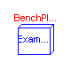
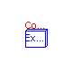
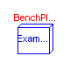
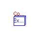
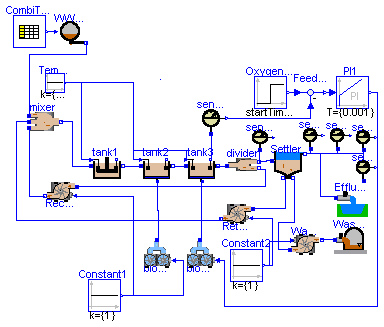
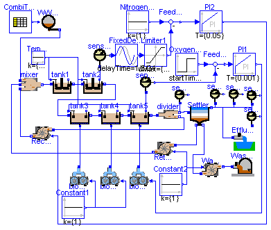
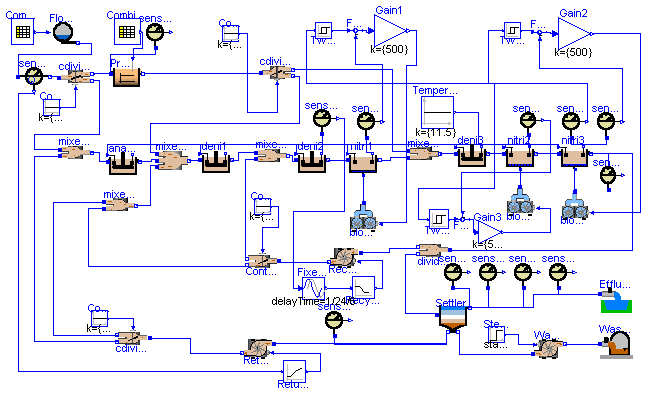

This package contains example ASM1 wastewater treatment plant models to demonstrate the usage of the WasteWater.ASM1 library. Open the models and simulate them according to the description provided in the models. The following demo models are present:
SmallPlant |
- example model with a small number of equations |
BenchPlant |
- corresponds to the COST simulation benchmark |
ComplexPlant |
- models a real municipal wastewater treatment plant |
Main Author: Gerald Reichl Technische Universitaet Ilmenau Faculty of Informatics and Automation Department Dynamics and Simulation of ecological Systems P.O. Box 10 05 65 98684 Ilmenau Germany email: gerald.reichl@tu-ilmenau.de Copyright (C) 2003, Gerald Reichl
The Modelica package is free software; it can be redistributed and/or modified under the terms of the Modelica license, see the license conditions and the accompanying disclaimer in the documentation of package Modelica in file "Modelica/package.mo".
WasteWater.ASM1.Examples.SmallPlant
This fictitious plant provides an ASM1 example model with a small number of equations. It consists of one denitrification and 2 nitrification tanks and a settler. Change into the directory ../ASM1 and translate the model. Before simulating the model load initial values from the script file small_asm1.mos that is provided besides the model. A 14 days dynamic influent data file is provided, too. So you may simulate up to 14 days. But start with 1 day as it may take some time for simulation. After simulation you may have a look at internal concentrations but most interesting are the relevant concentrations at the effluent of a plant which can be viewed via the sensors at the effluent of the secondary clarifier.
Main Author: Gerald Reichl Technische Universitaet Ilmenau Faculty of Informatics and Automation Department Dynamics and Simulation of ecological Systems P.O. Box 10 05 65 98684 Ilmenau Germany email: gerald.reichl@tu-ilmenau.de
class SmallPlant "Small WWTP Configuration"
import WasteWater;
extends Modelica.Icons.Example;
//Q_air=12100.99290780142 is equal to a Kla of 3.5 h^-1 from COST benchmark
//Q_air=34574.2654508612 is equal to a Kla of 10 h^-1 from COST benchmark
ASM1.EffluentSink Effluent;
ASM1.SludgeSink WasteSludge;
ASM1.divider2 divider;
ASM1.nitri tank3(V=1333);
ASM1.nitri tank2(V=1333);
ASM1.deni tank1(V=3000);
ASM1.mixer3 mixer;
ModelicaAdditions.Tables.CombiTableTime CombiTableTime(
tableName="Inf_dry",
fileName="Inf_dry.txt",
icol={16,3,4,5,6,7,8,9,10,11,12,13,14,15});
ASM1.WWSource WWSource;
ASM1.blower blower1(Q_max=34574.2654508612);
ASM1.blower blower2(Q_max=34574.2654508612);
ASM1.sensor_O2 sensor_O2;
Modelica.Blocks.Math.Feedback Feedback;
Modelica.Blocks.Continuous.PI PI1(k={500}, T={0.001});
Modelica.Blocks.Sources.Constant Constant1;
ASM1.pump RecyclePump(Q_max=46115);
ASM1.pump ReturnPump(Q_max=9223);
ASM1.pump WastePump(Q_max=193);
Modelica.Blocks.Sources.Constant Constant2;
Modelica.Blocks.Sources.Constant Temperature(k={15});
sensor_NH sensor_NH1;
WasteWater.ASM1.sensor_NO sensor_NO1;
WasteWater.ASM1.sensor_TKN sensor_TKN1;
WasteWater.ASM1.sensor_COD sensor_COD1;
Modelica.Blocks.Sources.Step OxygenSetpoint(height={1.5});
WasteWater.ASM1.SecClar.Krebs.SecClarModKrebs Settler;
WasteWater.ASM1.sensor_TSS sensor_TSS1;
equation
connect(tank3.Out, divider.In);
connect(mixer.Out, tank1.In);
connect(mixer.In1, WWSource.Out);
connect(CombiTableTime.outPort, WWSource.data);
connect(blower2.AirOut, tank3.AirIn);
connect(Feedback.outPort, PI1.inPort);
connect(PI1.outPort, blower2.u);
connect(divider.Out2, RecyclePump.In);
connect(RecyclePump.Out, mixer.In3);
connect(ReturnPump.Out, mixer.In2);
connect(sensor_O2.So, Feedback.inPort2);
connect(Temperature.outPort, tank1.T);
connect(Temperature.outPort, tank2.T);
connect(Temperature.outPort, tank3.T);
connect(OxygenSetpoint.outPort, Feedback.inPort1);
connect(Constant1.outPort, blower1.u);
connect(WastePump.Out, WasteSludge.In);
connect(WastePump.u, Constant2.outPort);
connect(tank2.Out, tank3.In);
connect(tank1.Out, tank2.In);
connect(blower1.AirOut, tank2.AirIn);
connect(Constant1.outPort, RecyclePump.u);
connect(Settler.Effluent, Effluent.In);
connect(Settler.Return, ReturnPump.In);
connect(WastePump.In, Settler.Waste);
connect(sensor_NH1.In, Settler.Effluent);
connect(sensor_NO1.In, Settler.Effluent);
connect(sensor_TKN1.In, Settler.Effluent);
connect(sensor_COD1.In, Settler.Effluent);
connect(Constant2.outPort, ReturnPump.u);
connect(divider.Out1, Settler.Feed);
connect(tank3.MeasurePort, sensor_O2.In);
connect(sensor_TSS1.In, divider.Out1);
end SmallPlant;

This ASM1 plant consists of 2 denitrification tanks (tank1 and tank2), 3 nitrification tanks (tank3 - tank5) and a secondary clarifier by Takacs. Furthermore there are 2 control loops modelled. This configuration corresponds to the COST simulation benchmark [1]. Change into the directory ../ASM1 and translate the model. Before simulating the model load initial values from the script file bench_asm1.mos that is provided besides the model. A 14 days dynamic influent data file is provided, too. So you may simulate up to 14 days. But start with 1 day as it may take some time for simulation. After simulation you may have a look at internal concentrations but most interesting are the relevant concentrations at the effluent of a plant which can be viewed via the sensors at the effluent of the secondary clarifier. References: [1] J.B. Copp: The COST Simulation Benchmark. 2000. http://www.ensic.u-nancy.fr/COSTWWTP/ PS: For those who want to reproduce the exact figures from the COST simulation benchmark some remarks: The aeration system in this library is different from that in COST, so be sure to produce an airflow corresponding to the desired Kla in COST. Furthermore in this library biological parameters are standard parameters from the ASM1 distribution and implemented with temperature dependency which may vary a bit from the parameter set used in COST. But it is possible. During the validation phase of this library the steady state and dynamic results from the COST simulation benchmark could exactly be reproduced.
class BenchPlant "COST Benchmark WWTP Configuration"
import WasteWater;
//Q_air=12100.99290780142 is equal to a Kla of 3.5 h^-1 from COST benchmark
extends Modelica.Icons.Example;
//Q_air=34574.2654508612 is equal to a Kla of 10 h^-1 from COST benchmark
ASM1.EffluentSink Effluent;
ASM1.SludgeSink WasteSludge;
ASM1.SecClarModTakacs Settler;
ASM1.divider2 divider;
ASM1.nitri tank5(V=1333);
ASM1.nitri tank4(V=1333);
ASM1.nitri tank3(V=1333);
ASM1.deni tank2;
ASM1.deni tank1;
ASM1.mixer3 mixer;
ModelicaAdditions.Tables.CombiTableTime CombiTableTime(
tableName="Inf_dry",
fileName="Inf_dry.txt",
icol={2,3,4,5,6,7,8,9,10,11,12,13,14,15});
ASM1.WWSource WWSource;
ASM1.sensor_NO sensor_NO;
ASM1.blower blower1(Q_max=34574.2654508612);
ASM1.blower blower2(Q_max=34574.2654508612);
ASM1.blower blower3(Q_max=34574.2654508612);
ASM1.sensor_O2 sensor_O2;
Modelica.Blocks.Math.Feedback Feedback;
Modelica.Blocks.Continuous.PI PI1(k={500}, T={0.001});
Modelica.Blocks.Sources.Constant Constant1;
ASM1.pump RecyclePump(Q_max=92230);
Modelica.Blocks.Continuous.PI PI2(k={15000}, T={0.05});
Modelica.Blocks.Sources.Constant NitrogenSetpoint;
Modelica.Blocks.Math.Feedback Feedback1;
Modelica.Blocks.Nonlinear.Limiter Limiter1(uMax={10}, uMin={0.1});
ASM1.pump ReturnPump(Q_max=18446);
ASM1.pump WastePump(Q_max=385);
Modelica.Blocks.Sources.Constant Constant2;
Modelica.Blocks.Sources.Constant Temperature(k={15});
ModelicaAdditions.Blocks.Nonlinear.FixedDelay FixedDelay1(delayTime=1/6/24);
sensor_NH sensor_NH1;
WasteWater.ASM1.sensor_NO sensor_NO1;
WasteWater.ASM1.sensor_TKN sensor_TKN1;
WasteWater.ASM1.sensor_COD sensor_COD1;
Modelica.Blocks.Sources.Step OxygenSetpoint(height={2});
WasteWater.ASM1.sensor_TSS sensor_TSS1;
equation
connect(divider.Out1, Settler.Feed);
connect(tank5.Out, divider.In);
connect(tank4.Out, tank5.In);
connect(tank3.Out, tank4.In);
connect(tank3.In, tank2.Out);
connect(tank1.Out, tank2.In);
connect(mixer.Out, tank1.In);
connect(mixer.In1, WWSource.Out);
connect(CombiTableTime.outPort, WWSource.data);
connect(sensor_NO.In, tank2.MeasurePort);
connect(blower1.AirOut, tank3.AirIn);
connect(blower2.AirOut, tank4.AirIn);
connect(blower3.AirOut, tank5.AirIn);
connect(Feedback.outPort, PI1.inPort);
connect(PI1.outPort, blower3.u);
connect(divider.Out2, RecyclePump.In);
connect(RecyclePump.Out, mixer.In3);
connect(Feedback1.outPort, PI2.inPort);
connect(NitrogenSetpoint.outPort, Feedback1.inPort1);
connect(PI2.outPort, RecyclePump.u);
connect(Limiter1.outPort, Feedback1.inPort2);
connect(Settler.Return, ReturnPump.In);
connect(ReturnPump.Out, mixer.In2);
connect(sensor_O2.So, Feedback.inPort2);
connect(Temperature.outPort, tank1.T);
connect(Temperature.outPort, tank2.T);
connect(Temperature.outPort, tank3.T);
connect(Temperature.outPort, tank4.T);
connect(Temperature.outPort, tank5.T);
connect(sensor_NO.Sno, FixedDelay1.inPort);
connect(FixedDelay1.outPort, Limiter1.inPort);
connect(OxygenSetpoint.outPort, Feedback.inPort1);
connect(Constant1.outPort, blower1.u);
connect(blower2.u, Constant1.outPort);
connect(WastePump.Out, WasteSludge.In);
connect(WastePump.In, Settler.Waste);
connect(WastePump.u, Constant2.outPort);
connect(sensor_NH1.In, Settler.Effluent);
connect(sensor_NO1.In, Settler.Effluent);
connect(sensor_TKN1.In, Settler.Effluent);
connect(sensor_COD1.In, Settler.Effluent);
connect(Effluent.In, Settler.Effluent);
connect(Constant2.outPort, ReturnPump.u);
connect(tank5.MeasurePort, sensor_O2.In);
connect(sensor_TSS1.In, divider.Out1);
end BenchPlant;

This ASM1 example plant configuration is from a real municipal wastewater treatment plant with a size of 145.000 p.e. It is a cascade-type continuous flow plant for a mean dry weather inflow of 28.500 m3/d. It consists of a preclarifier, an anaerobic tank, 3 denitrification and 3 nitrification tanks and a secondary settler. This model is an example for the Wastewater library and is not adapted with its parameters to the reality, therefore simulation results do not reflect the real plant behaviour. Change into the directory ../ASM1 and translate the model. Before simulating the model load initial values from the script file complex_asm1.mos that is provided besides the model. A 14 days dynamic influent data file is provided. So you may simulate up to 14 days. But start with 1 day as it may take some time for simulation. After simulation you may have a look at internal concentrations but most interesting are the relevant concentrations at the effluent of a plant which can be viewed via the sensors at the effluent of the secondary clarifier.
Main Author: Gerald Reichl Technische Universitaet Ilmenau Faculty of Informatics and Automation Department Dynamics and Simulation of ecological Systems P.O. Box 10 05 65 98684 Ilmenau Germany email: gerald.reichl@tu-ilmenau.de
model ComplexPlant "Complex ASM1 WWTP"
import WasteWater;
extends Modelica.Icons.Example;
ControlledDivider2 cdivider1;
Modelica.Blocks.Sources.Constant Constant2(k={0.8});
blower blower1(Q_max=162816)
"there exist 4 blowers of 4240 Nm3/h each, Q_max adusted according active aerated tanks";
nitri nitri2(
V=2772,
alpha=0.305,
de=5.24,
R_air=20);
deni anaerob(V=1287);
deni deni1(V=2772);
deni deni3(V=2772);
deni deni2(V=2772);
nitri nitri3(
V=5602,
alpha=0.305,
de=5.24,
R_air=21);
blower blower2(Q_max=81408)
"there exist 4 blowers of 4240 Nm3/h each, Q_max adjusted according active aerated tanks";
pump ReturnPump(Q_max=60480);
pump RecyclePump(Q_max=60480);
pump WastePump(Q_max=1920);
ControlledDivider2 cdivider2;
EffluentSink Effluent;
SludgeSink WasteSludge;
mixer2 mixer2_1;
mixer2 mixer2_2;
mixer3 mixer3_1;
mixer2 mixer2_5;
divider2 divider2_1;
ControlledDivider2 cdivider3;
Modelica.Blocks.Sources.Constant Constant4(k={0.5});
nitri nitri1(
V=5602,
alpha=0.305,
de=5.24,
R_air=21);
blower blower3(Q_max=162816)
"there exist 4 blowers of max 4240 Nm3/h, Q_max adusted according active aerated tanks";
Modelica.Blocks.Sources.Constant Constant7(k={0.56});
mixer2 mixer2_3;
PreClar.preclar3 Preclaryfier(V=1372, n_corr=2.138);
FlowSource FlowInput;
ControlledDivider2 ControlledDivider2_1;
Modelica.Blocks.Sources.Constant Constant6;
sensor_NO sensor_NO1;
sensor_NO sensor_NO3;
sensor_NH sensor_NH2;
sensor_TSS sensor_TSS1;
Modelica.Blocks.Sources.Constant Temperature(k={11.5});
WasteWater.Misc.RecycleController2 RecycleController1(NO3min=1.5);
WasteWater.Misc.ReturnController ReturnController1;
sensor_Q sensor_Q1;
WasteWater.Misc.TwoPoint TwoPoint1(
on=4.5,
off=4.0,
out_on=2.5,
out_off=1.5);
WasteWater.Misc.TwoPoint TwoPoint2(
on=4.5,
off=4.0,
out_on=2.5,
out_off=1.5);
WasteWater.ASM1.sensor_NH sensor_NH1;
Modelica.Blocks.Math.Feedback Feedback1;
Modelica.Blocks.Math.Feedback Feedback2;
WasteWater.ASM1.sensor_O2 sensor_O2_1;
WasteWater.ASM1.sensor_O2 sensor_O2_2;
WasteWater.ASM1.sensor_COD sensor_COD1;
WasteWater.ASM1.sensor_COD sensor_COD2;
WasteWater.ASM1.Examples.JenaSecClarModTakacs Settler(hsc=3.46, Asc=3704)
"The depth is calculated based on V and A of the settler and not the true depth.";
WasteWater.ASM1.sensor_TKN sensor_TKN1;
ModelicaAdditions.Tables.CombiTableTime CombiTableTime1(
tableName="drysim130303",
fileName="drysim130303.txt",
icol={2});
ModelicaAdditions.Tables.CombiTableTime CombiTableTime2(
tableName="drysim130303",
fileName="drysim130303.txt",
icol={3,7,4,6});
ModelicaAdditions.Blocks.Nonlinear.FixedDelay FixedDelay1(delayTime=1/24/6);
Modelica.Blocks.Math.Feedback Feedback3;
WasteWater.ASM1.sensor_O2 sensor_O2_3;
Modelica.Blocks.Math.Gain Gain1(k={500});
Modelica.Blocks.Math.Gain Gain2(k={500});
Modelica.Blocks.Math.Gain Gain3(k={500});
WasteWater.Misc.TwoPoint TwoPoint3(
on=4.5,
off=4.0,
out_on=2.0,
out_off=1.0);
Modelica.Blocks.Sources.Step Step1(
height={0.125},
offset={-0.5},
startTime={2.375});
WasteWater.ASM1.sensor_TSS sensor_TSS2;
equation
connect(deni3.Out, nitri2.In);
connect(nitri2.Out, nitri3.In);
connect(nitri3.Out, divider2_1.In);
connect(anaerob.Out, mixer3_1.In2);
connect(mixer2_5.Out, mixer3_1.In3);
connect(Constant4.outPort, cdivider3.u);
connect(nitri1.Out, mixer2_2.In2);
connect(deni2.Out, nitri1.In);
connect(cdivider2.Out1, mixer2_2.In1);
connect(cdivider3.Out2, mixer2_5.In1);
connect(deni1.Out, mixer2_1.In1);
connect(Constant7.outPort, cdivider2.u);
connect(cdivider3.In, ReturnPump.Out);
connect(cdivider3.Out1, mixer2_3.In2);
connect(cdivider1.Out2, mixer2_3.In1);
connect(WastePump.Out, WasteSludge.In);
connect(ControlledDivider2_1.Out2, mixer2_1.In2);
connect(ControlledDivider2_1.Out1, mixer2_5.In2);
connect(Constant6.outPort, ControlledDivider2_1.u);
connect(Preclaryfier.In, cdivider1.Out1);
connect(mixer2_2.Out, deni3.In);
connect(sensor_NO1.In, deni2.MeasurePort);
connect(Temperature.outPort, anaerob.T);
connect(Temperature.outPort, deni1.T);
connect(Temperature.outPort, deni2.T);
connect(Temperature.outPort, nitri1.T);
connect(Temperature.outPort, deni3.T);
connect(Temperature.outPort, nitri2.T);
connect(Temperature.outPort, nitri3.T);
connect(RecycleController1.out, RecyclePump.u);
connect(FlowInput.Out, sensor_Q1.In);
connect(sensor_Q1.Q, ReturnController1.in1);
connect(sensor_NH1.In, nitri3.MeasurePort);
connect(sensor_O2_2.In, nitri1.MeasurePort);
connect(Feedback1.inPort2, sensor_O2_2.So);
connect(sensor_O2_1.In, nitri3.MeasurePort);
connect(Feedback2.inPort2, sensor_O2_1.So);
connect(sensor_NH1.Snh, TwoPoint1.e);
connect(TwoPoint2.e, sensor_NH1.Snh);
connect(sensor_COD2.In, Preclaryfier.In);
connect(Settler.Effluent, Effluent.In);
connect(sensor_NO3.In, Settler.Effluent);
connect(sensor_NH2.In, Settler.Effluent);
connect(sensor_COD1.In, Settler.Effluent);
connect(WastePump.In, Settler.Waste);
connect(Settler.Return, ReturnPump.In);
connect(sensor_TSS1.In, Settler.Return);
connect(sensor_TKN1.In, Settler.Effluent);
connect(CombiTableTime1.outPort, FlowInput.data);
connect(Preclaryfier.MeasurePort, CombiTableTime2.outPort);
connect(FixedDelay1.inPort, sensor_NO1.Sno);
connect(sensor_O2_3.In, nitri2.MeasurePort);
connect(sensor_Q1.Out, cdivider1.In);
connect(cdivider2.Out2, mixer3_1.In1);
connect(mixer3_1.Out, deni1.In);
connect(mixer2_1.Out, deni2.In);
connect(FixedDelay1.outPort, RecycleController1.in1);
connect(Feedback2.inPort1, TwoPoint2.u);
connect(TwoPoint1.u, Feedback1.inPort1);
connect(mixer2_3.Out, anaerob.In);
connect(Gain1.inPort, Feedback1.outPort);
connect(Gain2.inPort, Feedback2.outPort);
connect(Feedback3.outPort, Gain3.inPort);
connect(sensor_O2_3.So, Feedback3.inPort2);
connect(TwoPoint3.u, Feedback3.inPort1);
connect(TwoPoint3.e, sensor_NH1.Snh);
connect(Step1.outPort, WastePump.u);
connect(blower1.AirOut, nitri3.AirIn);
connect(Constant2.outPort, cdivider1.u);
connect(Gain1.outPort, blower3.u);
connect(Gain3.outPort, blower2.u);
connect(blower1.u, Gain2.outPort);
connect(Settler.Feed, divider2_1.Out1);
connect(ReturnPump.u, ReturnController1.out);
connect(RecyclePump.Out, ControlledDivider2_1.In);
connect(RecyclePump.In, divider2_1.Out2);
connect(blower3.AirOut, nitri1.AirIn);
connect(cdivider2.In, Preclaryfier.Out);
connect(blower2.AirOut, nitri2.AirIn);
connect(sensor_TSS2.In, nitri3.Out);
end ComplexPlant;
WasteWater.ASM1.Examples.JenaSecClarModTakacs

This component models an ASM1 10 - layer secondary clarifier with 6 layers above the feed_layer (including top_layer) and 3 layers below the feed_layer (including bottom_layer).
| Name | Default | Description |
|---|---|---|
| hsc | 4.0 | height of secondary clarifier [m] |
| n | 10 | number of layers of SC model |
| zm | hsc/(1.0*n) | height of m-th secondary clarifier layer [m] |
| Asc | 1500.0 | area of secondary clarifier [m2] |
| Xt | 3000.0 | threshold for X [mg/l] |
model JenaSecClarModTakacs
"Secondary Clarifier Model based on Takacs prepared for a special plant"
extends WasteWater.Icons.SecClar;
extends ASM1.SecClar.Takacs.Interfaces.ratios;
package SCP = ASM1.SecClar.Takacs;
package SI = Modelica.SIunits;
package WI = ASM1.Interfaces;
package WWU = WasteWater.WasteWaterUnits;
parameter SI.Length hsc=4.0 "height of secondary clarifier";
parameter Integer n=10 "number of layers of SC model";
parameter SI.Length zm=hsc/(1.0*n) "height of m-th secondary clarifier layer";
parameter SI.Area Asc=1500.0 "area of secondary clarifier";
parameter WWU.MassConcentration Xt=3000.0 "threshold for X";
// total sludge concentration in clarifier feed
WWU.MassConcentration Xf;
// layers 1 to 10
WI.WWFlowAsm1in Feed;
WI.WWFlowAsm1out Effluent;
WI.WWFlowAsm1out Return;
WI.WWFlowAsm1out Waste;
SCP.bottom_layer S1(
zm=zm,
Asc=Asc,
Xf=Xf,
rXs=rXs,
rXbh=rXbh,
rXba=rXba,
rXp=rXp,
rXi=rXi,
rXnd=rXnd);
SCP.lower_layer S2(
zm=zm,
Asc=Asc,
Xf=Xf);
SCP.lower_layer S3(
zm=zm,
Asc=Asc,
Xf=Xf);
SCP.feed_layer S4(
zm=zm,
Asc=Asc,
Xf=Xf);
SCP.upper_layer S5(
zm=zm,
Asc=Asc,
Xf=Xf,
Xt=Xt);
SCP.upper_layer S6(
zm=zm,
Asc=Asc,
Xf=Xf,
Xt=Xt);
SCP.upper_layer S7(
zm=zm,
Asc=Asc,
Xf=Xf,
Xt=Xt);
SCP.upper_layer S8(
zm=zm,
Asc=Asc,
Xt=Xt,
Xf=Xf);
SCP.upper_layer S9(
zm=zm,
Asc=Asc,
Xf=Xf,
Xt=Xt);
SCP.top_layer S10(
zm=zm,
Asc=Asc,
Xf=Xf,
Xt=Xt,
rXs=rXs,
rXbh=rXbh,
rXba=rXba,
rXp=rXp,
rXi=rXi,
rXnd=rXnd);
equation
connect(S1.Up, S2.Dn);
connect(S2.Up, S3.Dn);
connect(S7.Up, S8.Dn);
connect(S9.Up, S10.Dn);
connect(S8.Up, S9.Dn);
connect(S1.PQw, Waste);
connect(S10.Out, Effluent);
connect(S1.PQr, Return);
connect(S4.Dn, S3.Up);
connect(S4.Up, S5.Dn);
connect(S5.Up, S6.Dn);
connect(S6.Up, S7.Dn);
connect(Feed, S4.In);
// total sludge concentration in clarifier feed
Xf = 0.75*(Feed.Xs + Feed.Xbh + Feed.Xba + Feed.Xp + Feed.Xi);
// ratios of solid components
rXs = Feed.Xs/Xf;
rXbh = Feed.Xbh/Xf;
rXba = Feed.Xba/Xf;
rXp = Feed.Xp/Xf;
rXi = Feed.Xi/Xf;
rXnd = Feed.Xnd/Xf;
end JenaSecClarModTakacs;